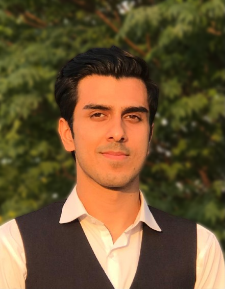
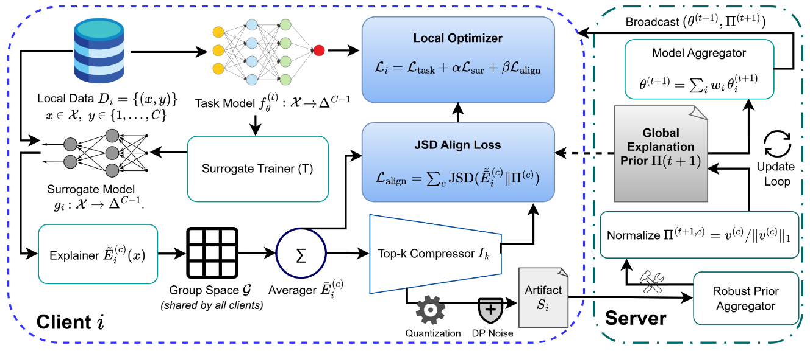
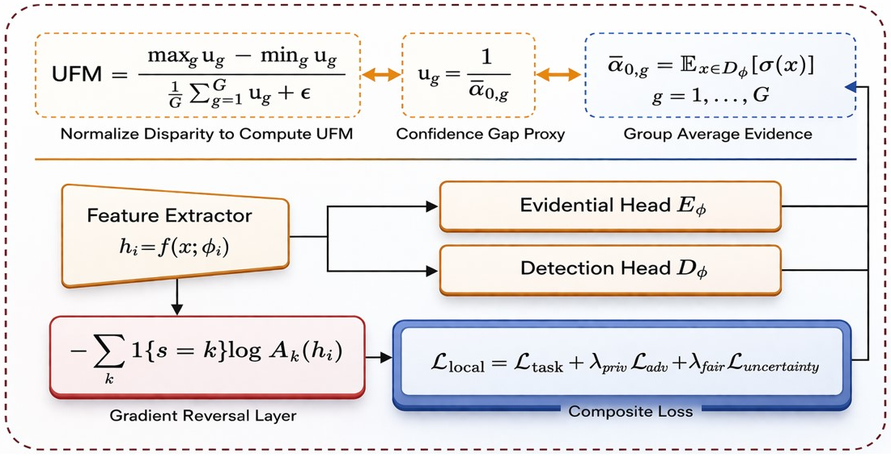
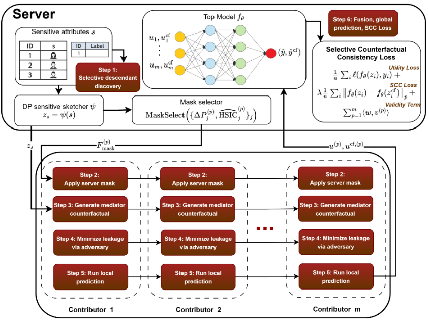
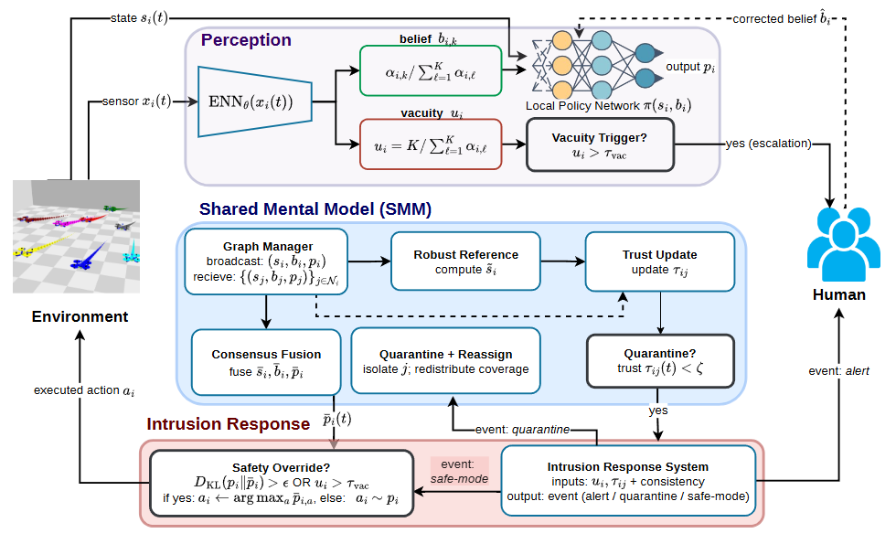
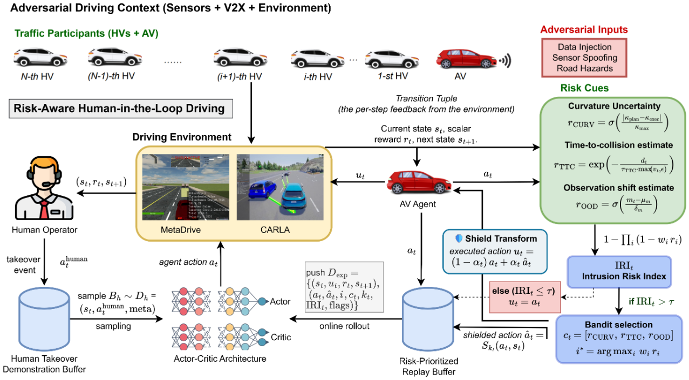
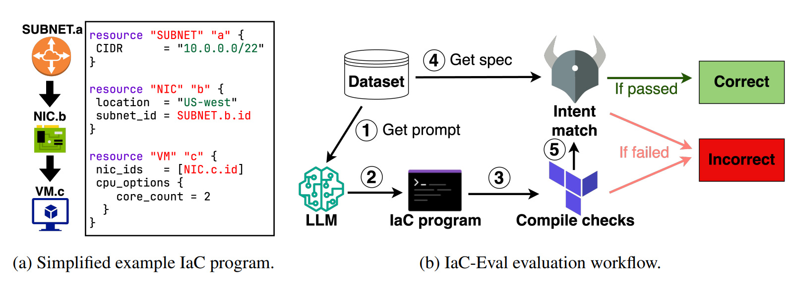
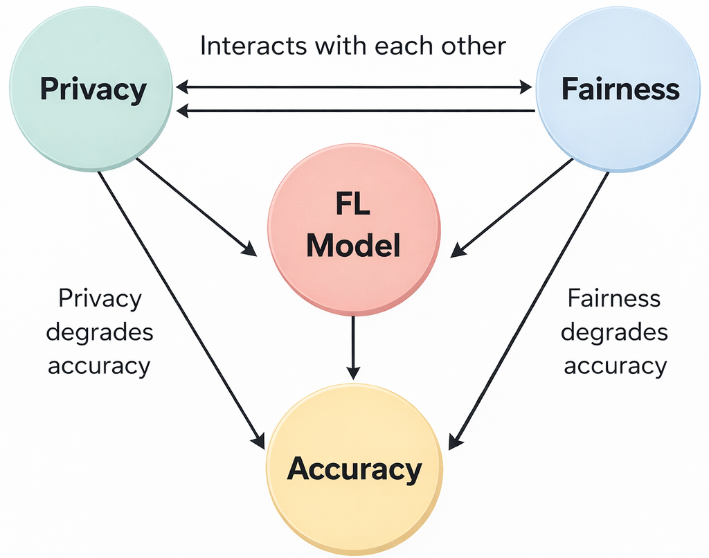
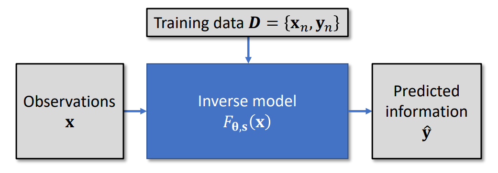
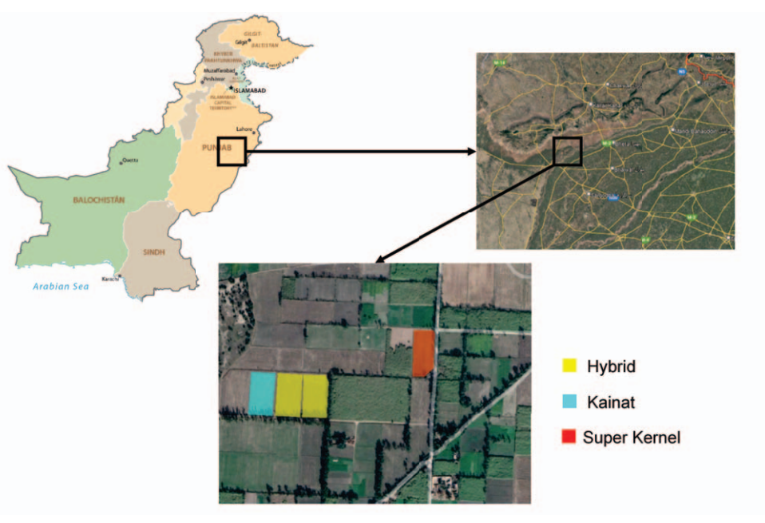

About Me
PhD Researcher at Virginia Tech
I am a second-year Computer Science PhD student at Virginia Tech, working in the Trustworthy Cyberspace Lab. My research addresses a core challenge in modern machine learning: how to build systems that are simultaneously private, fair, and high-performing when deployed in safety-critical environments. I develop principled methods at the intersection of federated learning, human-in-the-loop reinforcement learning, and multi-agent LLM systems, focusing on the fundamental trade-offs between differential privacy, group/individual fairness, and model utility. On the applied side, I design and evaluate these frameworks in domains where failures carry real consequences: autonomous vehicles, UAV/UGV swarm coordination, and cloud infrastructure automation.
I am advised by Dr. Jin-Hee Cho and have had the privilege of collaborating with outstanding researchers including Dr. Chang-Tien Lu, Dr. Chandan K. Reddy, Dr. Yuanyuan Wang, Dr. Muhammad Shahzad, and Dr. Muhammad Moazam Fraz, as well as researchers at the U.S. Army Research Laboratory (ARL), including Dr. Terrence J. Moore and Dr. Frederica F. Nelson. My recent work has been accepted at top venues including ICML, ICLR, ACM FAccT, AAAI/ACM AIES, and USENIX VehicleSec. Beyond research, I completed my summer internship with iD Tech @ Amazon HQ2 (Arlington) in Summer 2025, and I will join Rivian in Summer 2026 as a Motor Controls Machine Learning Intern.
Prior to Virginia Tech, I held a DAAD Research Fellowship at the Technical University of Munich (TUM), where I worked on uncertainty quantification for remote sensing under Prof. Xiaoxiang Zhu. I received my BS in Computer Science from NUST, Pakistan.

Recent papers, talks, publications, and research milestones
My research investigates how to build ML systems that are simultaneously private, fair, and performant. I focus on federated learning, human-in-the-loop RL, and multi-agent architectures, with deployments in autonomous driving, drone swarms, and cloud infrastructure.








